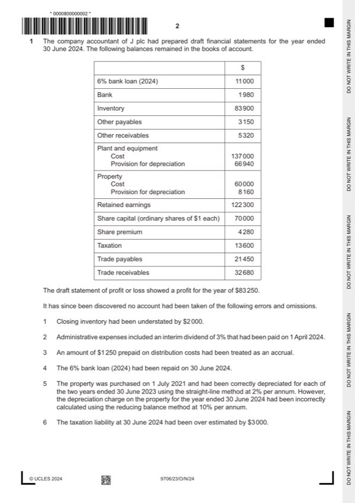

Question 1

Original paper page 2
Part 1(a) — solution
- $60 000 – $3 600 (1) = $56 400 (1) OF
Mark points
- $60 000 – $3 600 (1) = $56 400 (1) OF
Part 1(b) — solution
Calculate the revised profit for the year ended 30 June 2024. 7
$97 410 (7)
Workings
$
Draft profit 83 250 (1)
Closing inventory 2 000 (1)
Interim dividend 2 100 (1)
Distribution costs 2 500 (1)
Property depreciation 4 560 (1)
Taxation 3 000 (1)
Revised profit for the year 97 410 (1)OF
University Press & Assessment 2024 Page 7 of 17
9706/23 Cambridge International AS & A Level – Mark Scheme October/November
PUBLISHED 2024
Mark points
- Include the ideas shown in the solution above.
Part 1(c) — solution
Answer: 126 460 · 125 150
Prepare the statement of financial position at 30 June 2024. 10
J plc
Statement of financial position at 30 June 2024
$
Assets
Non-current assets
Property, plant and equipment 126 460 (1)
126 460
Current assets
Inventory 85 900 (1)
Trade and other receivables 39 250 (1)
125 150
Total assets 251 610 (1) OF
Equity and liabilities
Equity
Share capital 70 000
Share premium 4 280
Retained earnings 134 360 (1) OF
Total equity 208 640 (1)
Liabilities
Current liabilities
Bank overdraft 9 020 (1)
Trade and other payables 23 350 (1)
Taxation 10 600 (1)
Total liabilities 42 970
Total equity and liabilities 251 610 (1) OF
University Press & Assessment 2024 Page 8 of 17
9706/23 Cambridge International AS & A Level – Mark Scheme October/November
PUBLISHED 2024
Mark points
- Correct result: 126 460
- Correct result: 125 150
Part 1(d) — solution
- obsolescence (1)
- usage (1)
- time factor (1)
- technological change (1)
Mark points
- obsolescence (1)
- usage (1)
- time factor (1)
- technological change (1)
Part 1(e) — solution
State the formula for each of the following ratios. 2
Ratio Formula
Profit margin Profit for the year
100 (1)
Revenue
Return on capital employed Profit from operations
100 (1)
Capital employed
University Press & Assessment 2024 Page 9 of 17
9706/23 Cambridge International AS & A Level – Mark Scheme October/November
PUBLISHED 2024
Mark points
- Include the ideas shown in the solution above.
Part 1(f) — solution
- The company would have ownership of the asset (1)
- Would the bank be prepared to approve such a large loan? (1)
- Would the bank wish to take security for the loan (1)
- Interest payments would reduce profits (1)
- Depreciation would reduce profits (1)
- Likely to have a negative effect on the return on capital employed (1)
- May have a negative effect on profit margin unless significant increase in
- The company would not own the asset (1)
- Would not be obliged to retain the asset at the end of the agreement if not
- Lease payments would reduce profits (1)
- Less vulnerable to business downturn (1)
- Less likely to have a negative effect on return on capital employed (1)
- May have a negative effect on profit margin unless significant increase in
Mark points
- The company would have ownership of the asset (1)
- Would the bank be prepared to approve such a large loan? (1)
- Would the bank wish to take security for the loan (1)
- Interest payments would reduce profits (1)
- Depreciation would reduce profits (1)
- Likely to have a negative effect on the return on capital employed (1)
- May have a negative effect on profit margin unless significant increase in
- The company would not own the asset (1)
- Would not be obliged to retain the asset at the end of the agreement if not
- Lease payments would reduce profits (1)
- Less vulnerable to business downturn (1)
- Less likely to have a negative effect on return on capital employed (1)
- May have a negative effect on profit margin unless significant increase in